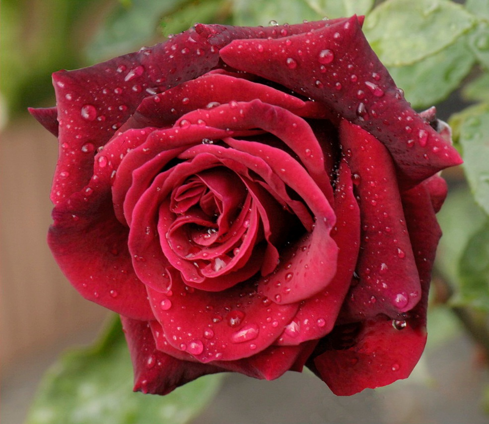
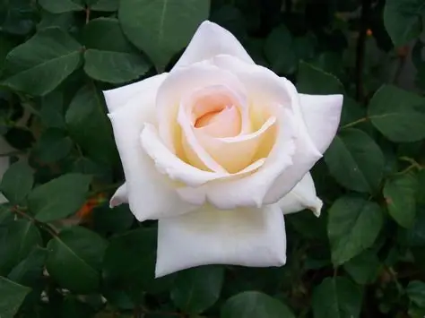
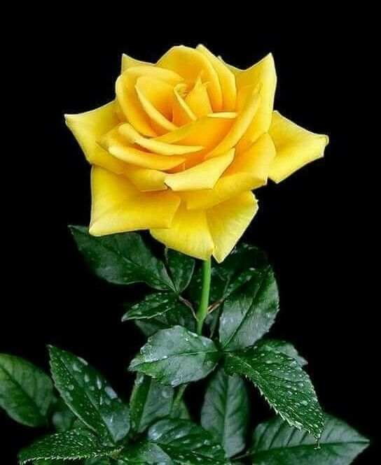
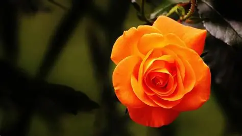
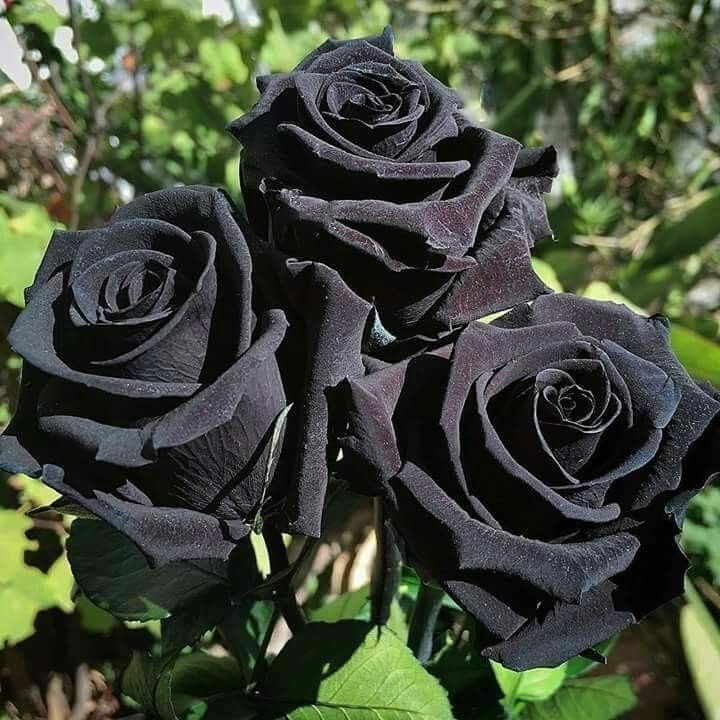

RumyFlowers Anonim Şirketi

KIRMIZI GÜL
Kırmızı gül, aşkın, tutkunun ve derin bağlılığın simgesidir. Genellikle romantik duyguları ifade etmek, sevgi dolu bir mesaj vermek ve özel birini ne kadar önemsediğini göstermek için tercih edilir. Ayrıca güçlü duyguların samimi bir ifadesi olarak kabul edilir.

BEYAZ GÜL
Beyaz gül, saflığın, masumiyetin ve dürüst duyguların sembolüdür. Temiz bir başlangıç, huzur ve zarif bir sevgi anlamı taşır. Genellikle özel ve içten duyguları ifade etmek için tercih edilir.

SARI GÜL
Sarı gül, dostluk, mutluluk ve sıcak enerjinin sembolüdür. Neşeyi, içtenliği ve pozitif duyguları ifade etmek için tercih edilir. Arkadaşlık ilişkilerinde çok anlamlıdır.

TURUNCU GÜL
Turuncu gül, heyecanı, enerjiyi ve güçlü hayranlığı simgeler. Tutkulu bir ilgiyi, canlı duyguları ve etkileyici bir beğeniyi ifade eder.

SİYAH GÜL
Siyah gül, gizemi, gücü ve yeniden doğuşu simgeler. Genellikle kararlılığı, derin duyguları ve güçlü bir ruh halini ifade eder. Aynı zamanda dönüşümün ve yeni bir başlangıcın sembolü olarak görülür.